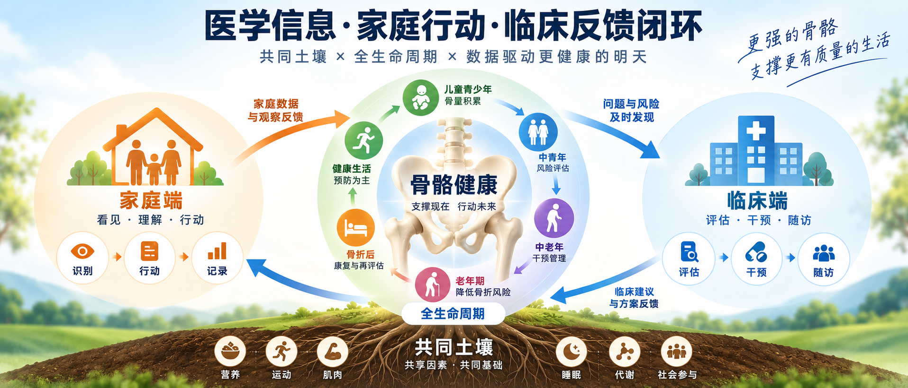

回家先做什么？
把门诊计划拆成今天能开始的一两件事。
WHY IT MATTERS / 01
患者可能不知道：回家先做什么；哪些事情需要记录；药物怎样长期执行；跌倒以后怎么办；什么时候应该提前复诊；下一次看医生时应该带回来什么。
因此，问题不仅是“有没有医学知识”，还包括医学信息能不能真正转化成家庭行动。
把门诊计划拆成今天能开始的一两件事。
留下真实生活中的变化、困难与异常。
让重要变化有路可回到医疗端。
THE LOOP / 02
不是把更多知识塞给患者，
而是让重要信息在正确的时间流动。
把计划带回家，把变化带回来。
家庭不是被动接收信息的一端，而是连续管理里重要的观察与行动现场。
THREE CONNECTED ENDS / 03
不是三套体系，
而是三端相互连接。
BUILDING NOW / 04
每一项工具都要经过讨论、审核与实践检验。当前状态如实标注，不把候选稿写成已经完成。
INFORMATION FLOW / 05
医生告诉家庭下一步做什么；家庭记录真实发生了什么；重要变化重新回到医生；医生再做判断。

A SIMULATED JOURNEY / 06
OPEN PRACTICE / 07
欢迎临床医生、护理人员、健康管理人员、健康教育工作者、公共卫生人员及相关专业同道，一起讨论骨质疏松科普、患者教育、门诊流程、家庭行动、随访与质量改进。
这不是某一个人的项目展示，更希望成为一个开放的专业交流入口。
了解共同实践 →CURRENT STATUS / 08
当前处于持续完善、专业审核与实践准备阶段。
本网站展示的部分工具可能仍为候选稿或内部审核版本。本项目目前不宣称已经形成成熟临床模式，也不宣称已经证明能够降低骨折发生率、改善骨密度，或已在不同机构完成有效性验证。
后续更关注真实运行中的：流程完成情况、家庭行动执行情况、随访完成情况、异常事件发现与闭环、复诊完成情况、工具可用性与持续质量改进。